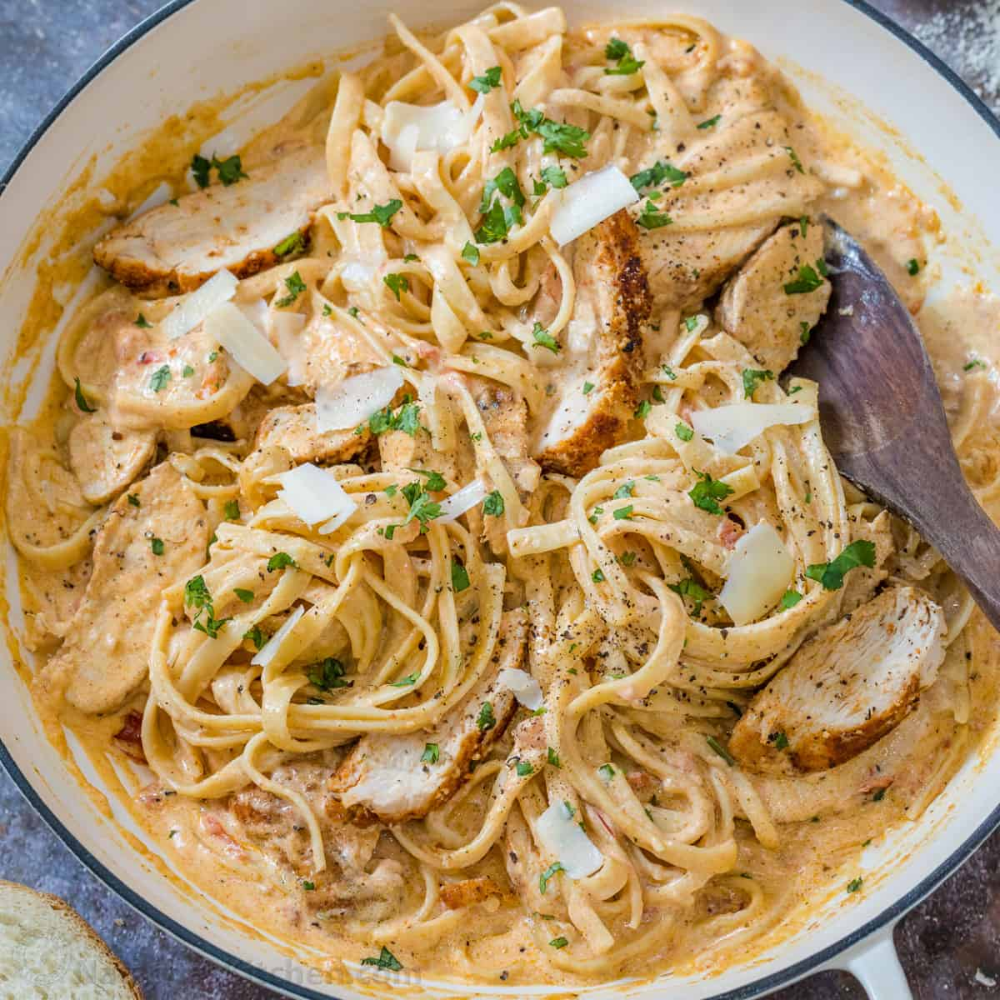

Creamy Cajun Chicken Pasta

Description:
Homemade Creamy Cajun Chicken Pasta is
such a simple and quick recipe, perfect
for weeknight dinners. Juicy chicken breast
tossed in tender pasta in a creamy cajun garlic sauce.
Creamy pasta with pieces of tender and juicy cajun
flavored chicken in the most delicious homemade
cajun sauce. You will love all the flavors from
the dish and it comes together in under 30 minutes
so it’s perfect for busy weeknights. I’m excited to
add this to our long lineup of 30-minute meals.
Ingredients:
- 4 ounces linguine pasta
- 2 boneless, skinless chicken breast halves, sliced into thin strips
- 2 teaspoons Cajun seasoning
- 2 tablespoons butter
- 1 green bell pepper, chopped
- ½ red bell pepper, chopped
- 4 fresh mushrooms, sliced
- 1 green onion, minced
- 1 ½ cups heavy cream
- ¼ teaspoon dried basil
- ¼ teaspoon lemon pepper
- ¼ teaspoon salt
- ⅛ teaspoon garlic powder
- ⅛ teaspoon ground black pepperv
- 2 tablespoons grated Parmesan cheese
Directions:
- Bring a large pot of lightly salted water to a boil. Add linguini pasta, and cook for 8 to 10 minutes, or until al dente; drain.
- Meanwhile, place chicken and Cajun seasoning in a bowl, and toss to coat.
-
In a large skillet over medium heat, saute chicken in butter until no longer pink and juices run clear, about 5 to 7 minutes. Add green and red bell peppers, sliced mushrooms and green onions; cook for 2 to 3 minutes. Reduce heat, and stir in heavy cream. Season the sauce with basil, lemon pepper, salt, garlic powder and ground black pepper, and heat through.